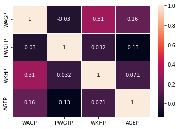

import pandas as pd
import numpy as np
from pandas.plotting import scatter_matrix
from sklearn.linear_model import LinearRegression
from sklearn.model_selection import train_test_split
from sklearn.model_selection import KFold
from sklearn.model_selection import cross_val_score
import matplotlib as mp
import matplotlib.pyplot as plt
from pandas.plotting import scatter_matrix
import seaborn as sns
5240 Group 1 - March the 26th, 2023
5240 Group 1 - March the 26th, 2023
ML Aproach
Import Libraries
- import pandas and numpy libraries
- import scatter_matrix from pandas.plotting
- import LinearRegression from sklearn.linear_model
- import train_test_split, KFold, and cross_val_score from sklearn.model_selection
- import matplotlib
- import seaborn
LOAD DATA SET
1. Load data and create DataFrame
1.1 Create from csv
df =pd.read_csv('C:\\Users\\palom\\5240\\psam_p48.csv')2. Read
2.1 Show top 2 and Bottom 5 rows
df.head(2)| RT | SERIALNO | DIVISION | SPORDER | PUMA | REGION | ST | ADJINC | PWGTP | AGEP | ... | PWGTP71 | PWGTP72 | PWGTP73 | PWGTP74 | PWGTP75 | PWGTP76 | PWGTP77 | PWGTP78 | PWGTP79 | PWGTP80 | |
|---|---|---|---|---|---|---|---|---|---|---|---|---|---|---|---|---|---|---|---|---|---|
| 0 | P | 2021GQ0000009 | 7 | 1 | 4615 | 3 | 48 | 1029928 | 31 | 21 | ... | 33 | 0 | 30 | 0 | 30 | 0 | 1 | 1 | 0 | 29 |
| 1 | P | 2021GQ0000014 | 7 | 1 | 2508 | 3 | 48 | 1029928 | 25 | 19 | ... | 51 | 0 | 25 | 24 | 25 | 49 | 0 | 25 | 24 | 0 |
2 rows × 287 columns
df.tail(5)| RT | SERIALNO | DIVISION | SPORDER | PUMA | REGION | ST | ADJINC | PWGTP | AGEP | ... | PWGTP71 | PWGTP72 | PWGTP73 | PWGTP74 | PWGTP75 | PWGTP76 | PWGTP77 | PWGTP78 | PWGTP79 | PWGTP80 | |
|---|---|---|---|---|---|---|---|---|---|---|---|---|---|---|---|---|---|---|---|---|---|
| 261441 | P | 2021HU1415640 | 7 | 1 | 2322 | 3 | 48 | 1029928 | 46 | 61 | ... | 14 | 45 | 41 | 81 | 14 | 50 | 45 | 15 | 45 | 71 |
| 261442 | P | 2021HU1415640 | 7 | 2 | 2322 | 3 | 48 | 1029928 | 78 | 61 | ... | 26 | 80 | 65 | 138 | 23 | 77 | 81 | 26 | 83 | 130 |
| 261443 | P | 2021HU1415668 | 7 | 1 | 4629 | 3 | 48 | 1029928 | 248 | 44 | ... | 245 | 242 | 249 | 429 | 76 | 406 | 225 | 71 | 73 | 429 |
| 261444 | P | 2021HU1415668 | 7 | 2 | 4629 | 3 | 48 | 1029928 | 288 | 53 | ... | 278 | 271 | 269 | 482 | 93 | 526 | 283 | 81 | 87 | 506 |
| 261445 | P | 2021HU1415668 | 7 | 3 | 4629 | 3 | 48 | 1029928 | 303 | 15 | ... | 293 | 302 | 274 | 543 | 89 | 505 | 288 | 85 | 93 | 500 |
5 rows × 287 columns
3. Filter columns
df.columnsIndex(['RT', 'SERIALNO', 'DIVISION', 'SPORDER', 'PUMA', 'REGION', 'ST',
'ADJINC', 'PWGTP', 'AGEP',
...
'PWGTP71', 'PWGTP72', 'PWGTP73', 'PWGTP74', 'PWGTP75', 'PWGTP76',
'PWGTP77', 'PWGTP78', 'PWGTP79', 'PWGTP80'],
dtype='object', length=287)Description of selected data fields
- ST: State Code based on 2010 Census definitions
- AGEP: Age
- COW: Class of worker
- ENG: Ability to speak English
- SCHL: Educational attainment
- SEX: Sex
- WAGP: Wages or salary income past 12 months (use ADJINC to adjust WAGP to constant dollars)
- WKHP: Usual hours worked per week past 12 months
- JWAP: Time of arrival at work - hour and minute
- JWDP: Time of departure for work - hour and minute
- MIGSP: Migration recode - State or foreign country code
- NAICSP: North American Industry Classification System (NAICS) recode for 2018 and later based on 2017 NAICS codes
- NOP: Nativity of parent
- OCCP: Occupation recode for 2018 and later based on 2018 OCC codes
- PERNP: Total person’s earnings (use ADJINC to adjust to constant dollars)
- PINCP: Total person’s income (signed, use ADJINC to adjust to constant dollars)
- POBP: Place of birth (Recode)
- SCIENGP: Field of Degree Science and Engineering Flag - NSF Definition
- SCIENGRLP: Field of Degree Science and Engineering Related Flag - NSF Definition
- SOCP: Standard Occupational Classification (SOC) codes for 2018 and later based on 2018 SOC codes
- WAOB: World area of birth
- FAGEP: Age allocation flag
- FSEMP: Self employment Flag
- PWGTP: Person’s weight
- RACASN: Asian recode (Asian alone or in combination with one or more other races)
- RACBLK: Black or African American recode (Black alone or in combination with one or more other races)
- RACWHT: White recode (White alone or in combination with one or more other races)
df2 = df[{'MIGSP','NAICSP','NOP','PERNP','PINCP','SCIENGP','SCIENGRLP','SOCP','WAOB','AGEP','SEX',
'POBP','COW','RT','ENG','SCHL','WAGP','WKHP','JWAP','JWDP','OCCP','POBP','ST','NATIVITY','FSEMP','PWGTP',
'RACASN','RACBLK','RACWHT'}]C:\Users\palom\AppData\Local\Temp\ipykernel_13200\3040542100.py:1: FutureWarning: Passing a set as an indexer is deprecated and will raise in a future version. Use a list instead.
df2 = df[{'MIGSP','NAICSP','NOP','PERNP','PINCP','SCIENGP','SCIENGRLP','SOCP','WAOB','AGEP','SEX',df2.head(10)| ST | RACASN | PINCP | JWDP | PERNP | WAOB | SEX | NATIVITY | RACWHT | RACBLK | ... | WAGP | RT | PWGTP | COW | POBP | JWAP | SOCP | NOP | OCCP | FSEMP | |
|---|---|---|---|---|---|---|---|---|---|---|---|---|---|---|---|---|---|---|---|---|---|
| 0 | 48 | 0 | 7000.0 | 118.0 | 7000.0 | 1 | 1 | 1 | 1 | 0 | ... | 7000.0 | P | 31 | 1.0 | 48 | 199.0 | 353031 | NaN | 4110.0 | 0 |
| 1 | 48 | 0 | 0.0 | NaN | 0.0 | 1 | 1 | 1 | 0 | 1 | ... | 0.0 | P | 25 | NaN | 36 | NaN | NaN | NaN | NaN | 0 |
| 2 | 48 | 0 | 0.0 | NaN | 0.0 | 1 | 1 | 1 | 1 | 0 | ... | 0.0 | P | 19 | 1.0 | 48 | NaN | 472211 | NaN | 6520.0 | 0 |
| 3 | 48 | 0 | 13500.0 | NaN | 0.0 | 1 | 1 | 1 | 0 | 1 | ... | 0.0 | P | 12 | NaN | 48 | NaN | NaN | NaN | NaN | 0 |
| 4 | 48 | 0 | 10800.0 | NaN | 0.0 | 1 | 1 | 1 | 1 | 0 | ... | 0.0 | P | 16 | NaN | 48 | NaN | NaN | NaN | NaN | 0 |
| 5 | 48 | 0 | 0.0 | NaN | 0.0 | 5 | 1 | 2 | 1 | 0 | ... | 0.0 | P | 56 | NaN | 110 | NaN | NaN | NaN | NaN | 0 |
| 6 | 48 | 0 | 0.0 | NaN | 0.0 | 1 | 1 | 1 | 0 | 0 | ... | 0.0 | P | 60 | NaN | 48 | NaN | NaN | NaN | NaN | 0 |
| 7 | 48 | 0 | 0.0 | NaN | 0.0 | 1 | 1 | 1 | 1 | 0 | ... | 0.0 | P | 25 | NaN | 6 | NaN | NaN | NaN | NaN | 0 |
| 8 | 48 | 0 | 0.0 | NaN | 0.0 | 1 | 1 | 1 | 1 | 0 | ... | 0.0 | P | 8 | NaN | 48 | NaN | NaN | NaN | NaN | 1 |
| 9 | 48 | 0 | 13000.0 | 100.0 | 13000.0 | 1 | 1 | 1 | 1 | 0 | ... | 13000.0 | P | 16 | 1.0 | 48 | 162.0 | 537065 | NaN | 9645.0 | 0 |
10 rows × 28 columns
print(df.shape)(261446, 287)df2.dtypesST int64
RACASN int64
PINCP float64
JWDP float64
PERNP float64
WAOB int64
SEX int64
NATIVITY int64
RACWHT int64
RACBLK int64
SCIENGP float64
SCHL float64
MIGSP float64
NAICSP object
AGEP int64
SCIENGRLP float64
ENG float64
WKHP float64
WAGP float64
RT object
PWGTP int64
COW float64
POBP int64
JWAP float64
SOCP object
NOP float64
OCCP float64
FSEMP int64
dtype: objectClean and Preprocess the Dataset
1. Clean the data
- Find and Mark Missing Values
df2.isnull().sum()ST 0
RACASN 0
PINCP 45410
JWDP 166266
PERNP 48880
WAOB 0
SEX 0
NATIVITY 0
RACWHT 0
RACBLK 0
SCIENGP 197341
SCHL 7952
MIGSP 226887
NAICSP 109139
AGEP 0
SCIENGRLP 197341
ENG 186811
WKHP 131782
WAGP 45410
RT 0
PWGTP 0
COW 109139
POBP 0
JWAP 166266
SOCP 109139
NOP 208561
OCCP 109139
FSEMP 0
dtype: int64df3 = df2[df2['COW'].notna()]df4 = df3[df3['WKHP'].notna()]df4['SCIENGP'] = df4['SCIENGP'].fillna(0)C:\Users\palom\AppData\Local\Temp\ipykernel_13200\2680412488.py:1: SettingWithCopyWarning:
A value is trying to be set on a copy of a slice from a DataFrame.
Try using .loc[row_indexer,col_indexer] = value instead
See the caveats in the documentation: https://pandas.pydata.org/pandas-docs/stable/user_guide/indexing.html#returning-a-view-versus-a-copy
df4['SCIENGP'] = df4['SCIENGP'].fillna(0)print(df4.shape)(129664, 28)df4.isnull().sum()ST 0
RACASN 0
PINCP 0
JWDP 34484
PERNP 0
WAOB 0
SEX 0
NATIVITY 0
RACWHT 0
RACBLK 0
SCIENGP 0
SCHL 0
MIGSP 110606
NAICSP 0
AGEP 0
SCIENGRLP 82852
ENG 88670
WKHP 0
WAGP 0
RT 0
PWGTP 0
COW 0
POBP 0
JWAP 34484
SOCP 0
NOP 127911
OCCP 0
FSEMP 0
dtype: int64df5 = df4[{'NAICSP','PERNP','PINCP','SOCP','WAOB','AGEP','SEX','SCIENGP',
'POBP','COW','RT','SCHL','WAGP','WKHP','OCCP','POBP','FSEMP','RACASN','RACBLK','RACWHT','PWGTP'}]C:\Users\palom\AppData\Local\Temp\ipykernel_13200\3447267456.py:1: FutureWarning: Passing a set as an indexer is deprecated and will raise in a future version. Use a list instead.
df5 = df4[{'NAICSP','PERNP','PINCP','SOCP','WAOB','AGEP','SEX','SCIENGP',df5.isnull().sum()RACASN 0
PINCP 0
PERNP 0
WAOB 0
SEX 0
RACWHT 0
RACBLK 0
SCIENGP 0
SCHL 0
NAICSP 0
AGEP 0
WKHP 0
WAGP 0
RT 0
PWGTP 0
COW 0
POBP 0
SOCP 0
OCCP 0
FSEMP 0
dtype: int64print(df5.shape)(129664, 20)2. Performing the Exploratory Data Analysis (EDA)
- Print a count of the number of rows (observations) and columns (variables)
- Print the data types of all variables
- Print a summary statistics of the data
df5.describe()| POBP | FSEMP | RACBLK | OCCP | PINCP | AGEP | RACASN | WAGP | SEX | SCIENGP | COW | PERNP | WKHP | SCHL | RACWHT | PWGTP | WAOB | |
|---|---|---|---|---|---|---|---|---|---|---|---|---|---|---|---|---|---|
| count | 129664.000000 | 129664.000000 | 129664.000000 | 129664.000000 | 1.296640e+05 | 129664.000000 | 129664.000000 | 129664.000000 | 129664.000000 | 129664.000000 | 129664.000000 | 129664.000000 | 129664.000000 | 129664.000000 | 129664.000000 | 129664.000000 | 129664.000000 |
| mean | 88.852480 | 0.158895 | 0.099688 | 4103.373118 | 6.075186e+04 | 42.917101 | 0.069402 | 52085.459650 | 1.465627 | 0.584511 | 2.102635 | 55968.915836 | 39.121815 | 18.277055 | 0.744586 | 117.242357 | 1.542788 |
| std | 102.200954 | 0.365580 | 0.299585 | 2713.268667 | 7.708049e+04 | 15.277441 | 0.254138 | 67908.465601 | 0.498819 | 0.830562 | 1.852596 | 71724.136602 | 13.094686 | 3.875669 | 0.436095 | 108.011057 | 1.150909 |
| min | 1.000000 | 0.000000 | 0.000000 | 10.000000 | -8.400000e+03 | 16.000000 | 0.000000 | 0.000000 | 1.000000 | 0.000000 | 1.000000 | -8400.000000 | 1.000000 | 1.000000 | 0.000000 | 1.000000 | 1.000000 |
| 25% | 47.000000 | 0.000000 | 0.000000 | 2025.000000 | 2.000000e+04 | 30.000000 | 0.000000 | 13000.000000 | 1.000000 | 0.000000 | 1.000000 | 17000.000000 | 36.000000 | 16.000000 | 0.000000 | 51.000000 | 1.000000 |
| 50% | 48.000000 | 0.000000 | 0.000000 | 4110.000000 | 4.000000e+04 | 42.000000 | 0.000000 | 35000.000000 | 1.000000 | 0.000000 | 1.000000 | 37500.000000 | 40.000000 | 19.000000 | 1.000000 | 84.000000 | 1.000000 |
| 75% | 48.000000 | 0.000000 | 0.000000 | 5740.000000 | 7.200000e+04 | 55.000000 | 0.000000 | 65000.000000 | 2.000000 | 1.000000 | 3.000000 | 69000.000000 | 43.000000 | 21.000000 | 1.000000 | 145.000000 | 1.000000 |
| max | 554.000000 | 1.000000 | 1.000000 | 9830.000000 | 1.157000e+06 | 92.000000 | 1.000000 | 489000.000000 | 2.000000 | 2.000000 | 8.000000 | 844000.000000 | 99.000000 | 24.000000 | 1.000000 | 2471.000000 | 8.000000 |
df5.describe(include='object')| NAICSP | RT | SOCP | |
|---|---|---|---|
| count | 129664 | 129664 | 129664 |
| unique | 269 | 1 | 529 |
| top | 23 | P | 1191XX |
| freq | 10174 | 129664 | 3697 |
df5['COW'].value_counts()1.0 86128
3.0 10502
6.0 9707
2.0 8407
4.0 5383
7.0 4742
5.0 4380
8.0 415
Name: COW, dtype: int64df5['WKHP'].value_counts()40.0 61789
50.0 10865
45.0 6707
30.0 5796
60.0 5507
...
71.0 4
89.0 3
73.0 3
93.0 1
81.0 1
Name: WKHP, Length: 97, dtype: int64df5['SCHL'].value_counts()21.0 29627
16.0 25361
19.0 18732
22.0 12248
20.0 10012
18.0 9155
17.0 4761
23.0 2908
14.0 2819
1.0 2407
15.0 2378
24.0 2029
13.0 1941
12.0 1781
9.0 1328
11.0 834
10.0 342
8.0 318
6.0 262
7.0 180
5.0 98
4.0 71
2.0 38
3.0 34
Name: SCHL, dtype: int64df5['WAOB'].value_counts()1 102765
3 15399
4 7149
5 2017
6 1335
2 541
7 355
8 103
Name: WAOB, dtype: int64df5['NAICSP'].value_counts(normalize=True)23 0.078464
6111 0.070112
722Z 0.060649
622M 0.035793
611M1 0.027216
...
3133 0.000039
31M 0.000031
2122 0.000031
3122 0.000015
3131 0.000008
Name: NAICSP, Length: 269, dtype: float64Histograms
df5.hist(figsize=(14,25), color='brown',layout=(9,2))
plt.show<function matplotlib.pyplot.show(close=None, block=None)>Density plot
#df5.__delitem__('ST')
df5.plot(kind='density', subplots=True, layout=(9,2), sharex=False, legend=True, fontsize=1, figsize=(12,8))
plt.show()Boxplot
df5.plot(kind='box', subplots=True, layout=(12,1), sharex=False, sharey=False, color = 'blue', figsize=(12,100))
plt.show()Fields in df5 df5 = df4[{‘NAICSP’,‘PERNP’,‘PINCP’,‘SOCP’,‘WAOB’,‘AGEP’,‘SEX’,‘SCIENGP’, ‘POBP’,‘COW’,‘RT’,‘SCHL’,‘WAGP’,‘WKHP’,‘OCCP’,‘POBP’,‘FSEMP’,‘RACASN’,‘RACBLK’,‘RACWHT’,‘PWGTP’}]
sns.boxplot(y='AGEP',x='SEX',data=df5)<AxesSubplot:xlabel='SEX', ylabel='AGEP'>sns.boxplot(y='WAGP',x='SEX',data=df5)<AxesSubplot:xlabel='SEX', ylabel='WAGP'>fig, ax = plt.subplots(figsize=[15,7])
sns.boxplot(y='WAGP',x='RACWHT',data=df5, showmeans=True, ax=ax)<AxesSubplot:xlabel='RACWHT', ylabel='WAGP'>fig, ax = plt.subplots(figsize=[15,7])
sns.boxplot(y='WAGP',x='COW',data=df5, ax=ax)<AxesSubplot:xlabel='COW', ylabel='WAGP'>1 Employee of a private for-profit company or business, or of an individual, for wages, salary, or commissions 2 Employee of a private not-for-profit, tax-exempt, or charitable organization 3 Local government employee (city, county, etc.) 4 State government employee 5 Federal government employee 6 Self-employed in own not incorporated business, professional practice, or farm 7 Self-employed in own incorporated business, professional practice or farm 8 Working without pay in family business or farm 9 Unemployed and last worked 5 years ago or earlier or never worked
fig, ax = plt.subplots(figsize=[15,7])
sns.boxplot(y='WAGP',x='WAOB',data=df5,ax=ax)<AxesSubplot:xlabel='WAOB', ylabel='WAGP'>1 US state (POBP = 001-059) 2 PR and US Island Areas (POBP = 061-099) 3 Latin America (POBP = 303,310-399) 4 Asia (POBP = 158-159,161,200-299) 5 Europe (POBP = 100-157,160,162-199) 6 Africa (POBP = 400-499) 7 Northern America (POBP = 300-302,304-309) 8 Oceania and at Sea (POBP = 060,500-554)
fig, ax = plt.subplots(figsize=[15,7])
sns.boxplot(y='WAGP',x='SCHL',data=df5,ax=ax)<AxesSubplot:xlabel='SCHL', ylabel='WAGP'>1 No schooling completed 2 Nursery school, preschool 3 Kindergarten 4 Grade 1 5 Grade 2 6 Grade 3 7 Grade 4 8 Grade 5 9 Grade 6 10 Grade 7 11 Grade 8 12 Grade 9 13 Grade 10 14 Grade 11 15 12th grade - no diploma 16 Regular high school diploma 17 GED or alternative credential 18 Some college, but less than 1 year 19 1 or more years of college credit, no degree 20 Associate’s degree 21 Bachelor’s degree 22 Master’s degree 23 Professional degree beyond a bachelor’s degree 24 Doctorate degree
fig, ax = plt.subplots(figsize=[15,7])
sns.boxplot(y='WAGP',x='SCIENGP',data=df5,ax=ax)<AxesSubplot:xlabel='SCIENGP', ylabel='WAGP'>1 Yes 2 No 0 N/A (less than bachelor’s degree)
fig, ax = plt.subplots(figsize=[15,7])
sns.boxplot(y='PWGTP',x='SCHL',data=df5,ax=ax)<AxesSubplot:xlabel='SCHL', ylabel='PWGTP'>#df5[df5['WAGP'] == 0]| POBP | FSEMP | RACBLK | NAICSP | RT | SOCP | OCCP | PINCP | AGEP | RACASN | WAGP | SEX | SCIENGP | COW | PERNP | WKHP | SCHL | RACWHT | WAOB | |
|---|---|---|---|---|---|---|---|---|---|---|---|---|---|---|---|---|---|---|---|
| 6259 | 48 | 1 | 0 | 5411 | P | 2310XX | 2100.0 | 36000.0 | 92 | 0 | 0.0 | 1 | 1.0 | 6.0 | 36000.0 | 40.0 | 22.0 | 1 | 1 |
| 9287 | 48 | 1 | 0 | 5411 | P | 2310XX | 2100.0 | 36000.0 | 92 | 0 | 0.0 | 1 | 1.0 | 6.0 | 36000.0 | 40.0 | 22.0 | 1 | 1 |
| 10600 | 48 | 1 | 0 | 5411 | P | 2310XX | 2100.0 | 36000.0 | 92 | 0 | 0.0 | 1 | 1.0 | 6.0 | 36000.0 | 40.0 | 22.0 | 1 | 1 |
| 13292 | 36 | 0 | 0 | 5241 | P | 413021 | 4810.0 | 90000.0 | 65 | 0 | 0.0 | 2 | 2.0 | 6.0 | 70000.0 | 30.0 | 22.0 | 1 | 1 |
| 13387 | 17 | 0 | 0 | 23 | P | 472061 | 6260.0 | 42050.0 | 73 | 0 | 0.0 | 1 | 1.0 | 6.0 | 4800.0 | 10.0 | 21.0 | 1 | 1 |
| ... | ... | ... | ... | ... | ... | ... | ... | ... | ... | ... | ... | ... | ... | ... | ... | ... | ... | ... | ... |
| 261035 | 48 | 0 | 0 | 6211 | P | 291210 | 3090.0 | 355000.0 | 40 | 1 | 0.0 | 1 | 1.0 | 6.0 | 355000.0 | 40.0 | 23.0 | 0 | 1 |
| 261036 | 207 | 0 | 0 | 6211 | P | 291210 | 3090.0 | 355000.0 | 40 | 1 | 0.0 | 2 | 1.0 | 6.0 | 355000.0 | 35.0 | 23.0 | 0 | 4 |
| 261117 | 48 | 0 | 0 | 814 | P | 311122 | 3602.0 | 12500.0 | 61 | 0 | 0.0 | 1 | 2.0 | 6.0 | 12500.0 | 25.0 | 21.0 | 1 | 1 |
| 261152 | 33 | 0 | 0 | 611M3 | P | 2530XX | 2360.0 | 11000.0 | 66 | 0 | 0.0 | 2 | 2.0 | 6.0 | 1000.0 | 30.0 | 22.0 | 1 | 1 |
| 261282 | 48 | 0 | 0 | 531M | P | 419020 | 4920.0 | 8500.0 | 31 | 0 | 0.0 | 2 | 1.0 | 6.0 | 8500.0 | 5.0 | 21.0 | 1 | 1 |
2541 rows × 19 columns
scatter_matrix (df5, alpha=0.8, figsize=(19,9))
plt.show()scatter_matrix(df5, figsize= (19,9), alpha=0.2,
c='red', hist_kwds={'color':['purple']})
plt.suptitle('Scatter-matrix for each input variable', fontsize=28)Text(0.5, 0.98, 'Scatter-matrix for each input variable')df6 = df5[{'WAOB','AGEP','SEX','SCHL','WAGP','COW','SCIENGP','RACBLK','RACASN','RACWHT','PWGTP','WKHP' }]C:\Users\palom\AppData\Local\Temp\ipykernel_5968\253076953.py:1: FutureWarning: Passing a set as an indexer is deprecated and will raise in a future version. Use a list instead.
df6 = df5[{'WAOB','AGEP','SEX','SCHL','WAGP','COW','SCIENGP','RACBLK','RACASN','RACWHT','PWGTP','WKHP' }]df6.corr()| SCIENGP | COW | RACBLK | WKHP | RACASN | SCHL | RACWHT | PWGTP | AGEP | WAOB | WAGP | SEX | |
|---|---|---|---|---|---|---|---|---|---|---|---|---|
| SCIENGP | 1.000000 | 0.080558 | -0.042630 | 0.085184 | 0.101355 | 0.580924 | 0.066131 | -0.040396 | 0.101553 | 0.018074 | 0.284940 | 0.082618 |
| COW | 0.080558 | 1.000000 | -0.015433 | -0.018988 | -0.007037 | 0.061322 | 0.031225 | -0.042766 | 0.158071 | 0.008126 | -0.087735 | -0.005521 |
| RACBLK | -0.042630 | -0.015433 | 1.000000 | -0.022655 | -0.077096 | 0.008016 | -0.515551 | 0.119869 | -0.024176 | -0.006801 | -0.061490 | 0.032942 |
| WKHP | 0.085184 | -0.018988 | -0.022655 | 1.000000 | -0.006012 | 0.081683 | 0.022595 | 0.031666 | 0.071202 | 0.011924 | 0.313858 | -0.178888 |
| RACASN | 0.101355 | -0.007037 | -0.077096 | -0.006012 | 1.000000 | 0.089950 | -0.403506 | -0.019532 | -0.028038 | 0.394236 | 0.066795 | 0.005282 |
| SCHL | 0.580924 | 0.061322 | 0.008016 | 0.081683 | 0.089950 | 1.000000 | 0.104606 | -0.053052 | 0.048600 | -0.101367 | 0.277641 | 0.074910 |
| RACWHT | 0.066131 | 0.031225 | -0.515551 | 0.022595 | -0.403506 | 0.104606 | 1.000000 | -0.098626 | 0.057566 | -0.292292 | 0.064158 | -0.012245 |
| PWGTP | -0.040396 | -0.042766 | 0.119869 | 0.031666 | -0.019532 | -0.053052 | -0.098626 | 1.000000 | -0.132648 | 0.058218 | -0.029721 | -0.016745 |
| AGEP | 0.101553 | 0.158071 | -0.024176 | 0.071202 | -0.028038 | 0.048600 | 0.057566 | -0.132648 | 1.000000 | 0.051957 | 0.161174 | -0.007855 |
| WAOB | 0.018074 | 0.008126 | -0.006801 | 0.011924 | 0.394236 | -0.101367 | -0.292292 | 0.058218 | 0.051957 | 1.000000 | 0.020318 | -0.031325 |
| WAGP | 0.284940 | -0.087735 | -0.061490 | 0.313858 | 0.066795 | 0.277641 | 0.064158 | -0.029721 | 0.161174 | 0.020318 | 1.000000 | -0.147523 |
| SEX | 0.082618 | -0.005521 | 0.032942 | -0.178888 | 0.005282 | 0.074910 | -0.012245 | -0.016745 | -0.007855 | -0.031325 | -0.147523 | 1.000000 |
fig, ax = plt.subplots(figsize=[15,7])
sns.heatmap(df6.corr(),annot=True,lw=1,ax=ax)<AxesSubplot:>df7 = df5[{'AGEP','WAGP','PWGTP','WKHP' }]C:\Users\palom\AppData\Local\Temp\ipykernel_5968\1234415807.py:1: FutureWarning: Passing a set as an indexer is deprecated and will raise in a future version. Use a list instead.
df7 = df5[{'AGEP','WAGP','PWGTP','WKHP' }]#fig, ax = plt.subplots(figsize=[7,4])
#fig, bx = plt.subplots(figsize=[7,4])
sns.pairplot(df6,x_vars=['AGEP','WKHP'],y_vars=['WAGP'],hue='SEX',height=4.1,aspect=2.1)
sns.pairplot(df6,x_vars=['PWGTP','WKHP'],y_vars=['WAGP'],hue='SCHL',height=4.1,aspect=2.1)df7.corr()| WAGP | PWGTP | WKHP | AGEP | |
|---|---|---|---|---|
| WAGP | 1.000000 | -0.029721 | 0.313858 | 0.161174 |
| PWGTP | -0.029721 | 1.000000 | 0.031666 | -0.132648 |
| WKHP | 0.313858 | 0.031666 | 1.000000 | 0.071202 |
| AGEP | 0.161174 | -0.132648 | 0.071202 | 1.000000 |
sns.heatmap(df7.corr(),annot=True,lw=1)<AxesSubplot:>
sns.heatmap(df6.corr(),annot=True,lw=1)<AxesSubplot:>scatter_matrix(df7, figsize= (19,9), alpha=0.2,
c='red', hist_kwds={'color':['purple']})
plt.suptitle('Scatter-matrix for each input variable', fontsize=28)Text(0.5, 0.98, 'Scatter-matrix for each input variable')#df6=df6[(df6[['NAICSP','WAOB','AGEP','SEX','SCHL','WAGP']] !=0).all(axis=1)]
#df6 = df5[{'WAOB','AGEP','SEX','SCHL','WAGP','COW','SCIENGP','RACBLK','RACASN','RACWHT','PWGTP','WKHP' }]print(df6.shape)(129664, 12)sns.pairplot(df7, height=1.5)
Create Dummy Variables
df5['WAOB'].unique()array([1, 3, 4, 2, 6, 5, 7, 8], dtype=int64)df5['US'] = 0
df5['AEU'] = 0
df5.loc[(df5['WAOB'] == 1) | (df5['WAOB'] == 2) , 'US'] = 1
df5.loc[(df5['WAOB'] == 4) | (df5['WAOB'] == 5) , 'AEU'] = 1C:\Users\palom\AppData\Local\Temp\ipykernel_5968\810489426.py:1: SettingWithCopyWarning:
A value is trying to be set on a copy of a slice from a DataFrame.
Try using .loc[row_indexer,col_indexer] = value instead
See the caveats in the documentation: https://pandas.pydata.org/pandas-docs/stable/user_guide/indexing.html#returning-a-view-versus-a-copy
df5['US'] = 0
C:\Users\palom\AppData\Local\Temp\ipykernel_5968\810489426.py:2: SettingWithCopyWarning:
A value is trying to be set on a copy of a slice from a DataFrame.
Try using .loc[row_indexer,col_indexer] = value instead
See the caveats in the documentation: https://pandas.pydata.org/pandas-docs/stable/user_guide/indexing.html#returning-a-view-versus-a-copy
df5['AEU'] = 0df5[(df5['US'] == 1) | (df5['AEU'] == 1)]| POBP | FSEMP | RACBLK | NAICSP | RT | SOCP | OCCP | PINCP | AGEP | RACASN | ... | PERNP | WKHP | SCHL | RACWHT | PWGTP | WAOB | BACHE | GRADU | US | AEU | |
|---|---|---|---|---|---|---|---|---|---|---|---|---|---|---|---|---|---|---|---|---|---|
| 0 | 48 | 0 | 0 | 722Z | P | 353031 | 4110.0 | 7000.0 | 21 | 0 | ... | 7000.0 | 25.0 | 19.0 | 1 | 31 | 1 | 0 | 0 | 1 | 0 |
| 9 | 48 | 0 | 0 | 44511 | P | 537065 | 9645.0 | 13000.0 | 18 | 0 | ... | 13000.0 | 30.0 | 18.0 | 1 | 16 | 1 | 0 | 0 | 1 | 0 |
| 13 | 36 | 0 | 0 | 611M2 | P | 272022 | 2722.0 | 500.0 | 20 | 1 | ... | 500.0 | 6.0 | 19.0 | 0 | 31 | 1 | 0 | 0 | 1 | 0 |
| 14 | 48 | 0 | 0 | 611M1 | P | 393031 | 4420.0 | 200.0 | 18 | 0 | ... | 200.0 | 4.0 | 18.0 | 1 | 6 | 1 | 0 | 0 | 1 | 0 |
| 15 | 48 | 0 | 1 | 611M1 | P | 439XXX | 5940.0 | 1600.0 | 20 | 0 | ... | 1600.0 | 20.0 | 19.0 | 0 | 65 | 1 | 0 | 0 | 1 | 0 |
| ... | ... | ... | ... | ... | ... | ... | ... | ... | ... | ... | ... | ... | ... | ... | ... | ... | ... | ... | ... | ... | ... |
| 261438 | 26 | 0 | 0 | 531M | P | 419020 | 4920.0 | 31000.0 | 52 | 0 | ... | 31000.0 | 25.0 | 20.0 | 1 | 83 | 1 | 0 | 0 | 1 | 0 |
| 261439 | 26 | 0 | 0 | 52M1 | P | 113031 | 120.0 | 152000.0 | 63 | 0 | ... | 109000.0 | 40.0 | 21.0 | 1 | 94 | 1 | 0 | 0 | 1 | 0 |
| 261440 | 26 | 0 | 0 | 713Z | P | 272021 | 2721.0 | 8000.0 | 22 | 0 | ... | 8000.0 | 37.0 | 19.0 | 1 | 133 | 1 | 0 | 0 | 1 | 0 |
| 261441 | 24 | 0 | 0 | 5241 | P | 151252 | 1021.0 | 115000.0 | 61 | 0 | ... | 115000.0 | 40.0 | 24.0 | 1 | 46 | 1 | 0 | 1 | 1 | 0 |
| 261442 | 72 | 0 | 0 | 5415 | P | 413091 | 4840.0 | 150000.0 | 61 | 0 | ... | 150000.0 | 40.0 | 24.0 | 1 | 78 | 2 | 0 | 1 | 1 | 0 |
112472 rows × 24 columns
df5['MALE'] = 0
df5.loc[(df5['SEX'] == 1) , 'MALE'] = 1
#df5.loc[df5['NAICSP'].str.startswith(('23','11','21','33','48','49','31','32','42','22','3M')) , 'WHBLCO'] = 1
C:\Users\palom\AppData\Local\Temp\ipykernel_5968\3128391656.py:1: SettingWithCopyWarning:
A value is trying to be set on a copy of a slice from a DataFrame.
Try using .loc[row_indexer,col_indexer] = value instead
See the caveats in the documentation: https://pandas.pydata.org/pandas-docs/stable/user_guide/indexing.html#returning-a-view-versus-a-copy
df5['MALE'] = 0df5.head()| POBP | FSEMP | RACBLK | NAICSP | RT | SOCP | OCCP | PINCP | AGEP | RACASN | ... | WKHP | SCHL | RACWHT | PWGTP | WAOB | BACHE | GRADU | US | AEU | MALE | |
|---|---|---|---|---|---|---|---|---|---|---|---|---|---|---|---|---|---|---|---|---|---|
| 0 | 48 | 0 | 0 | 722Z | P | 353031 | 4110.0 | 7000.0 | 21 | 0 | ... | 25.0 | 19.0 | 1 | 31 | 1 | 0 | 0 | 1 | 0 | 1 |
| 9 | 48 | 0 | 0 | 44511 | P | 537065 | 9645.0 | 13000.0 | 18 | 0 | ... | 30.0 | 18.0 | 1 | 16 | 1 | 0 | 0 | 1 | 0 | 1 |
| 13 | 36 | 0 | 0 | 611M2 | P | 272022 | 2722.0 | 500.0 | 20 | 1 | ... | 6.0 | 19.0 | 0 | 31 | 1 | 0 | 0 | 1 | 0 | 1 |
| 14 | 48 | 0 | 0 | 611M1 | P | 393031 | 4420.0 | 200.0 | 18 | 0 | ... | 4.0 | 18.0 | 1 | 6 | 1 | 0 | 0 | 1 | 0 | 0 |
| 15 | 48 | 0 | 1 | 611M1 | P | 439XXX | 5940.0 | 1600.0 | 20 | 0 | ... | 20.0 | 19.0 | 0 | 65 | 1 | 0 | 0 | 1 | 0 | 0 |
5 rows × 25 columns
df5['BACHE'] = 0
df5['GRADU'] = 0
df5.loc[(df5['SCHL'] == 1) | (df5['SCHL'] == 2) , 'BACHE'] = 1
df5.loc[df5['SCHL'] > 21 , 'GRADU'] = 1
C:\Users\palom\AppData\Local\Temp\ipykernel_5968\3381236083.py:1: SettingWithCopyWarning:
A value is trying to be set on a copy of a slice from a DataFrame.
Try using .loc[row_indexer,col_indexer] = value instead
See the caveats in the documentation: https://pandas.pydata.org/pandas-docs/stable/user_guide/indexing.html#returning-a-view-versus-a-copy
df5['BACHE'] = 0
C:\Users\palom\AppData\Local\Temp\ipykernel_5968\3381236083.py:2: SettingWithCopyWarning:
A value is trying to be set on a copy of a slice from a DataFrame.
Try using .loc[row_indexer,col_indexer] = value instead
See the caveats in the documentation: https://pandas.pydata.org/pandas-docs/stable/user_guide/indexing.html#returning-a-view-versus-a-copy
df5['GRADU'] = 0df5[(df5['GRADU'] == 1) | (df5['BACHE'] == 1)]| POBP | FSEMP | RACBLK | NAICSP | RT | SOCP | OCCP | PINCP | AGEP | RACASN | ... | SCIENGP | COW | PERNP | WKHP | SCHL | RACWHT | PWGTP | WAOB | BACHE | GRADU | |
|---|---|---|---|---|---|---|---|---|---|---|---|---|---|---|---|---|---|---|---|---|---|
| 850 | 303 | 0 | 0 | 8131 | P | 212011 | 2040.0 | 31500.0 | 36 | 0 | ... | 2.0 | 2.0 | 31500.0 | 40.0 | 22.0 | 1 | 11 | 3 | 0 | 1 |
| 1025 | 13 | 0 | 0 | 6214 | P | 291123 | 3160.0 | 90000.0 | 26 | 0 | ... | 2.0 | 1.0 | 90000.0 | 50.0 | 23.0 | 1 | 61 | 1 | 0 | 1 |
| 1611 | 48 | 0 | 1 | 333MS | P | 537051 | 9600.0 | 11000.0 | 60 | 0 | ... | 0.0 | 1.0 | 11000.0 | 36.0 | 1.0 | 0 | 15 | 1 | 1 | 0 |
| 2697 | 4 | 0 | 0 | 6241 | P | 212011 | 2040.0 | 12500.0 | 59 | 0 | ... | 2.0 | 1.0 | 12500.0 | 40.0 | 22.0 | 1 | 9 | 1 | 0 | 1 |
| 2703 | 303 | 0 | 0 | 23 | P | 472XXX | 6220.0 | 20000.0 | 53 | 0 | ... | 0.0 | 1.0 | 20000.0 | 40.0 | 1.0 | 1 | 52 | 3 | 1 | 0 |
| ... | ... | ... | ... | ... | ... | ... | ... | ... | ... | ... | ... | ... | ... | ... | ... | ... | ... | ... | ... | ... | ... |
| 261395 | 48 | 0 | 0 | 6111 | P | 119030 | 230.0 | 72000.0 | 61 | 0 | ... | 2.0 | 3.0 | 72000.0 | 80.0 | 22.0 | 1 | 55 | 1 | 0 | 1 |
| 261426 | 36 | 0 | 0 | 6111 | P | 252020 | 2310.0 | 58000.0 | 60 | 0 | ... | 2.0 | 3.0 | 58000.0 | 68.0 | 22.0 | 1 | 74 | 1 | 0 | 1 |
| 261427 | 48 | 0 | 0 | 6111 | P | 119030 | 230.0 | 103000.0 | 41 | 0 | ... | 2.0 | 3.0 | 103000.0 | 60.0 | 22.0 | 1 | 80 | 1 | 0 | 1 |
| 261441 | 24 | 0 | 0 | 5241 | P | 151252 | 1021.0 | 115000.0 | 61 | 0 | ... | 1.0 | 1.0 | 115000.0 | 40.0 | 24.0 | 1 | 46 | 1 | 0 | 1 |
| 261442 | 72 | 0 | 0 | 5415 | P | 413091 | 4840.0 | 150000.0 | 61 | 0 | ... | 1.0 | 1.0 | 150000.0 | 40.0 | 24.0 | 1 | 78 | 2 | 0 | 1 |
19630 rows × 22 columns
df5['SALARYW'] = 0
df5['OWNERW'] = 0
df5.loc[(df5['COW'] <= 5) , 'SALARYW'] = 1
df5.loc[df5['COW'] == 7 , 'OWNERW'] = 1C:\Users\palom\AppData\Local\Temp\ipykernel_5968\547111326.py:1: SettingWithCopyWarning:
A value is trying to be set on a copy of a slice from a DataFrame.
Try using .loc[row_indexer,col_indexer] = value instead
See the caveats in the documentation: https://pandas.pydata.org/pandas-docs/stable/user_guide/indexing.html#returning-a-view-versus-a-copy
df5['SALARYW'] = 0
C:\Users\palom\AppData\Local\Temp\ipykernel_5968\547111326.py:2: SettingWithCopyWarning:
A value is trying to be set on a copy of a slice from a DataFrame.
Try using .loc[row_indexer,col_indexer] = value instead
See the caveats in the documentation: https://pandas.pydata.org/pandas-docs/stable/user_guide/indexing.html#returning-a-view-versus-a-copy
df5['OWNERW'] = 0df5[(df5['SALARYW'] == 1) | (df5['OWNERW'] == 1)]| POBP | FSEMP | RACBLK | NAICSP | RT | SOCP | OCCP | PINCP | AGEP | RACASN | ... | RACWHT | PWGTP | WAOB | BACHE | GRADU | US | AEU | MALE | SALARYW | OWNERW | |
|---|---|---|---|---|---|---|---|---|---|---|---|---|---|---|---|---|---|---|---|---|---|
| 0 | 48 | 0 | 0 | 722Z | P | 353031 | 4110.0 | 7000.0 | 21 | 0 | ... | 1 | 31 | 1 | 0 | 0 | 1 | 0 | 1 | 1 | 0 |
| 9 | 48 | 0 | 0 | 44511 | P | 537065 | 9645.0 | 13000.0 | 18 | 0 | ... | 1 | 16 | 1 | 0 | 0 | 1 | 0 | 1 | 1 | 0 |
| 13 | 36 | 0 | 0 | 611M2 | P | 272022 | 2722.0 | 500.0 | 20 | 1 | ... | 0 | 31 | 1 | 0 | 0 | 1 | 0 | 1 | 1 | 0 |
| 14 | 48 | 0 | 0 | 611M1 | P | 393031 | 4420.0 | 200.0 | 18 | 0 | ... | 1 | 6 | 1 | 0 | 0 | 1 | 0 | 0 | 1 | 0 |
| 15 | 48 | 0 | 1 | 611M1 | P | 439XXX | 5940.0 | 1600.0 | 20 | 0 | ... | 0 | 65 | 1 | 0 | 0 | 1 | 0 | 0 | 1 | 0 |
| ... | ... | ... | ... | ... | ... | ... | ... | ... | ... | ... | ... | ... | ... | ... | ... | ... | ... | ... | ... | ... | ... |
| 261440 | 26 | 0 | 0 | 713Z | P | 272021 | 2721.0 | 8000.0 | 22 | 0 | ... | 1 | 133 | 1 | 0 | 0 | 1 | 0 | 1 | 1 | 0 |
| 261441 | 24 | 0 | 0 | 5241 | P | 151252 | 1021.0 | 115000.0 | 61 | 0 | ... | 1 | 46 | 1 | 0 | 1 | 1 | 0 | 1 | 1 | 0 |
| 261442 | 72 | 0 | 0 | 5415 | P | 413091 | 4840.0 | 150000.0 | 61 | 0 | ... | 1 | 78 | 2 | 0 | 1 | 1 | 0 | 0 | 1 | 0 |
| 261443 | 373 | 1 | 0 | 492 | P | 435021 | 5510.0 | 26700.0 | 44 | 0 | ... | 1 | 248 | 3 | 0 | 0 | 0 | 0 | 0 | 1 | 0 |
| 261444 | 373 | 1 | 0 | 6111 | P | 151230 | 1050.0 | 60000.0 | 53 | 0 | ... | 1 | 288 | 3 | 0 | 0 | 0 | 0 | 1 | 1 | 0 |
119542 rows × 27 columns
dflr = df5[{'AGEP','WKHP','US','AEU','MALE','GRADU','BACHE','SALARYW','OWNERW','WAGP'}]C:\Users\palom\AppData\Local\Temp\ipykernel_5968\3648399855.py:1: FutureWarning: Passing a set as an indexer is deprecated and will raise in a future version. Use a list instead.
dflr = df5[{'AGEP','WKHP','US','AEU','MALE','GRADU','BACHE','SALARYW','OWNERW','WAGP'}]dflr.head(20)| WKHP | BACHE | AEU | GRADU | AGEP | US | WAGP | OWNERW | MALE | SALARYW | |
|---|---|---|---|---|---|---|---|---|---|---|
| 0 | 25.0 | 0 | 0 | 0 | 21 | 1 | 7000.0 | 0 | 1 | 1 |
| 9 | 30.0 | 0 | 0 | 0 | 18 | 1 | 13000.0 | 0 | 1 | 1 |
| 13 | 6.0 | 0 | 0 | 0 | 20 | 1 | 500.0 | 0 | 1 | 1 |
| 14 | 4.0 | 0 | 0 | 0 | 18 | 1 | 200.0 | 0 | 0 | 1 |
| 15 | 20.0 | 0 | 0 | 0 | 20 | 1 | 1600.0 | 0 | 0 | 1 |
| 19 | 40.0 | 0 | 0 | 0 | 29 | 1 | 3800.0 | 0 | 1 | 1 |
| 20 | 40.0 | 0 | 0 | 0 | 64 | 1 | 18000.0 | 0 | 1 | 1 |
| 21 | 40.0 | 0 | 0 | 0 | 22 | 1 | 22000.0 | 0 | 1 | 1 |
| 22 | 50.0 | 0 | 0 | 0 | 37 | 1 | 90000.0 | 0 | 1 | 1 |
| 23 | 40.0 | 0 | 0 | 0 | 20 | 1 | 2000.0 | 0 | 1 | 1 |
| 27 | 40.0 | 0 | 0 | 0 | 46 | 1 | 4000.0 | 0 | 1 | 1 |
| 29 | 40.0 | 0 | 0 | 0 | 55 | 1 | 0.0 | 0 | 1 | 0 |
| 30 | 24.0 | 0 | 0 | 0 | 19 | 1 | 2000.0 | 0 | 0 | 1 |
| 31 | 5.0 | 0 | 0 | 0 | 18 | 1 | 1500.0 | 0 | 0 | 1 |
| 37 | 40.0 | 0 | 0 | 0 | 40 | 1 | 150.0 | 0 | 0 | 1 |
| 38 | 40.0 | 0 | 0 | 0 | 46 | 1 | 4000.0 | 0 | 1 | 1 |
| 39 | 22.0 | 0 | 0 | 0 | 18 | 1 | 5000.0 | 0 | 1 | 1 |
| 41 | 20.0 | 0 | 0 | 0 | 20 | 1 | 3000.0 | 1 | 1 | 0 |
| 48 | 25.0 | 0 | 0 | 0 | 18 | 1 | 1600.0 | 0 | 0 | 1 |
| 52 | 45.0 | 0 | 0 | 0 | 32 | 1 | 0.0 | 0 | 1 | 0 |
print(dflr.shape)(129664, 10)print(dflr.info())<class 'pandas.core.frame.DataFrame'>
Int64Index: 129664 entries, 0 to 261444
Data columns (total 10 columns):
# Column Non-Null Count Dtype
--- ------ -------------- -----
0 WKHP 129664 non-null float64
1 BACHE 129664 non-null int64
2 AEU 129664 non-null int64
3 GRADU 129664 non-null int64
4 AGEP 129664 non-null int64
5 US 129664 non-null int64
6 WAGP 129664 non-null float64
7 OWNERW 129664 non-null int64
8 MALE 129664 non-null int64
9 SALARYW 129664 non-null int64
dtypes: float64(2), int64(8)
memory usage: 14.9 MB
NoneLINEAR REGRESION
STEP 1: Separate the Dataset into Input & Output NumPy Arrays
- Store the dataframe d2 values into a NumPy array
- Separate the array into input and output components by slicing
#Separate the dependent from the independent variables.
array = dflr.values
X = array [:,[0,1,2,3,4,5,7,8,9]]
Y = array [:,6]X.shape(129664, 9)STEP 2: Split into Input/Output Array into Training/Testing Datasets
- Split the dataset into training at 67% and test at 33% with the seed = 7
#Selection of records to include in which sub-dataset must be done randomly
# use the for seed randomization
test_size = 0.33
seed = 7
# Split the dataset (both input & output) into training/testing datasets
X_train, X_test, Y_train, Y_test= train_test_split(X,Y, test_size=0.33,
random_state=seed)
X_train.shape(86874, 9)TRAIN MODEL
STEP 3: Build and Train the Model
- Assign LinearRegression to the model
- Train the model
- Print the intercept and coefficients
- Print the list of the coefficients with their correspondent variable name
#Assign LinearRegression to the model
model = LinearRegression()#Train the model
reg = model.fit(X_train, Y_train)#Print the intercept and coefficients
print ("Intercept:", reg.intercept_)
print ("Coefficients:", reg.coef_)Intercept: -93421.23353624818
Coefficients: [ 1302.61387251 -14080.96350139 19626.06457212 48782.53278423
597.31323087 11801.78875007 63193.35845697 15483.08043019
46672.8424576 ]#Print the list of the coefficients with their correspondent variable name
names_2 = ['WKHP','BACHE','AEU','GRADU','AGEP','US','OWNERW','MALE','SALARYW']
coeffs_zip = zip(names_2, reg.coef_)
# Convert iterator into a set
coeffs = set(coeffs_zip)
# Print (coeffs)
for coef in coeffs:
print (coef, "\n")('BACHE', -14080.963501386306)
('US', 11801.788750073873)
('SALARYW', 46672.842457602696)
('GRADU', 48782.53278422593)
('WKHP', 1302.6138725146875)
('AGEP', 597.3132308680757)
('OWNERW', 63193.35845697323)
('AEU', 19626.064572124906)
('MALE', 15483.08043018768)
SCORE MODEL
STEP 4: Calculate R-Squared
- Calculate the R-Squared
- Print the score
** Note: The higher the R-squared, the better (0 – 100%). Depending on the model, the best models score above 83%. The R-squared value tells us how well the independent variables predict the dependent variable, which is very low. Think about how you could increase the R-squared. What variables would you use?
#What is this for???
LinearRegression(copy_X=True, fit_intercept=True, n_jobs=1, normalize=False)LinearRegression(n_jobs=1, normalize=False)#Calculate the R-Squared
R_squared = model.score(X_test, Y_test)
print("R-squared: ", R_squared)R-squared: 0.23681191222626774Step 5: Prediction
Execute model prediction
We have now trained the model. Let’s use the trained model to predict the “Salary of an individual” WAGP
We are using the following predictors:
WKHP: Works 50 hours a week
BACHE: has also 0
AEU: then will be = 0
GRADU: Let say has and MBA = 1
AGEP: He is a Male 30 years old
US: US citizent = 1
OWNER: Then will be =0
MALE: Will be = 1
SALARYW: Work for a company =1
** Note: The model predicts that the median value of owner-occupied homes in 1000 dollars in the above suburb should be around $24,144.
model.predict([[50,0,0,1,30,1,0,1,1]])array([112369.10143762])Case 2 prediction:
- Male from the US, 30 years old with a graduate degree. Works 50 hr/wk but owner of a business
model.predict([[50,0,0,1,30,1,1,1,0]])array([160079.3794644])Case 3 prediction:
- Male from Asia or Europe, 30 years old with a graduate degree. Works 50 hr/wk but owner of a business
model.predict([[50,0,0,1,30,0,1,1,0]])array([163760.67114452])Case 4 prediction:
- Male from US, 40 years old with a graduate or bachelor degree. Works 50 hr/wk and is a salary employee.
model.predict([[50,0,0,0,40,1,0,1,1]])array([69559.70096207])Case 5 prediction:
- Male from US, 40 years old with a graduate or bachelor degree. Works 50 hr/wk and is a salary employee.
model.predict([[40,0,0,1,40,0,1,0,1]])EVALUATE MODELS
Step 6: Train & Score Model 2 Using K-Fold Cross Validation Data Split
- Specify the k-size to 10
- Fix the random seed to 7
- Split the entire data set
- Obtain the Mean squared error
- Train the model and run K-fold cross-validation
- Print results
# Evaluate the algorithm
# Specify the K-size
num_folds = 10
# Fix the random seed
# must use the same seed value so that the same subsets can be obtained
# for each time the process is repeated
seed = 7
# Split the whole data set into folds
kfold= KFold(n_splits=num_folds, random_state=seed, shuffle=True)
# For Linear regression, we can use MSE (mean squared error) value
# to evaluate the model/algorithm
scoring = 'neg_mean_squared_error'# Train the model and run K-foLd cross-validation to validate/evaluate the model
results = cross_val_score(model, X, Y, cv=kfold, scoring=scoring)
# Print out the evaluation results
# Result: the average of all the results obtained from the k-fold crossvalidation
print("Average of all results from the K-fold Cross-Validation",end="")
print(",using negative mean squared error:",results.mean())Average of all results from the K-fold Cross-Validation,using negative mean squared error: -3525537755.348807Step 7: Score Using Explained Variance
Let’s use a different scoring parameter. Here we use the Explained Variance. The best possible score is 1.0; lower values are worse. - Specify the k-size to 10 - Set the seed to 7 - Split the entire data set - Obtain the explained variance score - Train the model and run K-fold cross-validation - Print results
# Evaluate the algorithm
# Specify the K-size
num_folds = 10
# Fix the random seed must use the same seed value so that the same subsets
# can be obtained
# for each time the process is repeated
seed = 7
# Split the whole data set into folds
kfold= KFold(n_splits=num_folds, random_state=seed, shuffle=True)
# For Linear regression, we can use explained variance value to evaluate the model/algorithm
scoring = 'explained_variance'# Train the model and run K-foLd cross-validation to validate/evaluate the model
results = cross_val_score(model, X, Y, cv=kfold, scoring=scoring)
# Print out the evaluation results
# Result: the average of all the results obtained from the k-fold crossvalidation
print("Average of all results from the K-fold Cross Validation",end="")
print(" using exlpained variance:",results.mean())Average of all results from the K-fold Cross Validation using exlpained variance: 0.23548372748977942sns.pairplot(df5,x_vars=['AGEP','WKHP'],y_vars=['WAGP'],hue='BACHE',height=4.1,aspect=2.1)fig, ax = plt.subplots(figsize=[15,7])
sns.heatmap(df5.corr(),annot=True,lw=1,ax=ax)<AxesSubplot:>df5.loc[df5['WAGP'] > 0 , 'WAGP'] = df5['WAGP']/1000004. Delete/Output
4.1 Output to csv
df5.to_csv('outputdf5')4.2 Output to Jason
##df.to_json()4.3 Output to HTML
##df.to_html()4.4 Delete Dataframe
#del df#df.head()